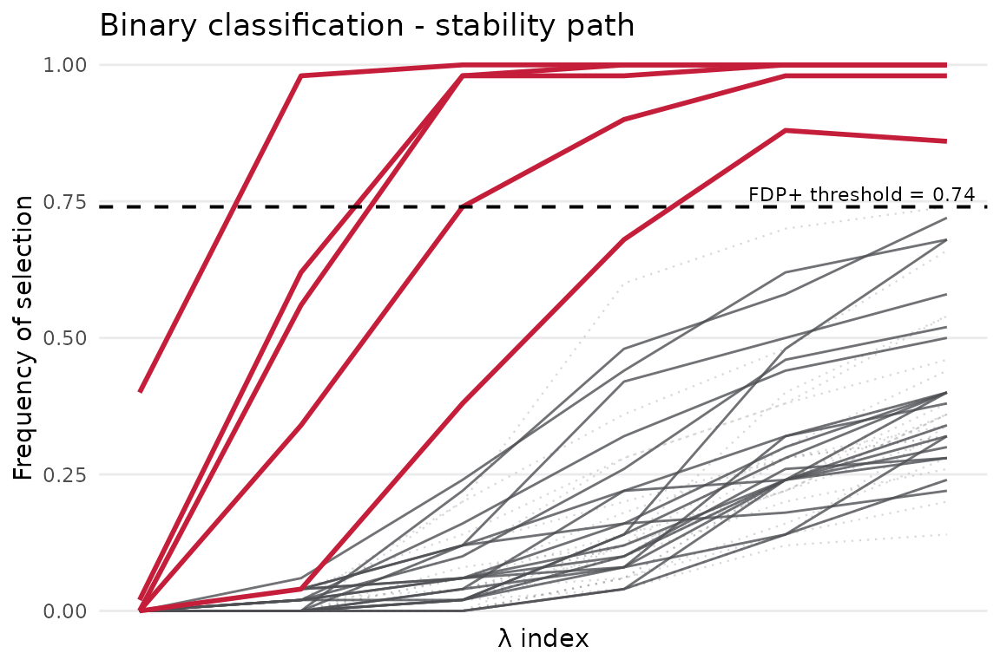
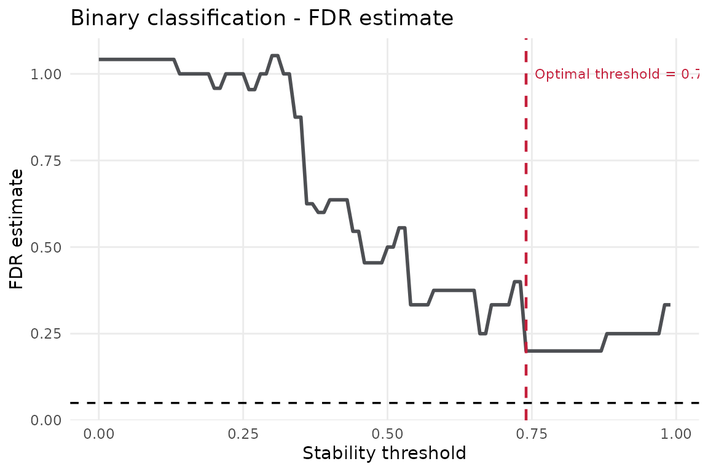
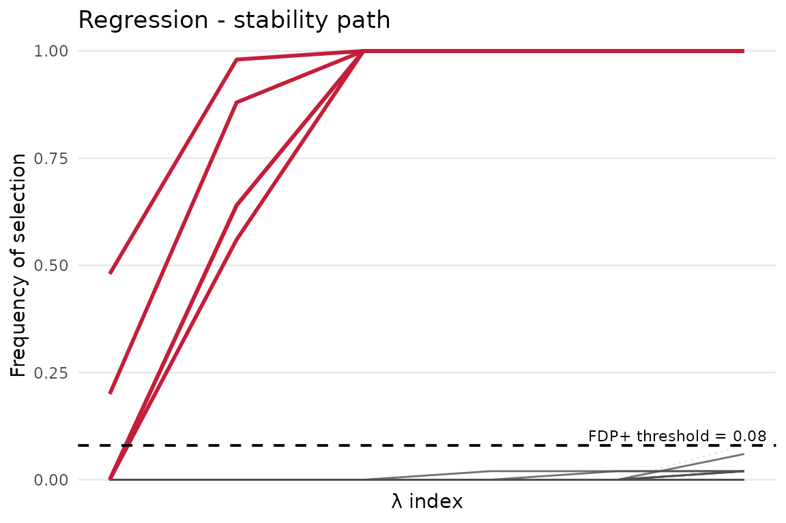

What is STABL?
A high-dimensional biomarker screen begins with an uncomfortable fact: there are many more tempting variables than there are samples. A sparse model can still choose a short list, but a single fit does not tell us whether the list is sturdy or merely lucky.
STABL (Stability-based Thresholding and Aggregation for Biomarker discovery via LASSO) turns that one-shot question into a repeated experiment. It resamples the data, fits a sparse learner across a penalty grid, records how often each feature appears, and calibrates the result against artificial decoy features. The central object is therefore not one coefficient vector. It is a frequency: how often does this feature survive when the data are perturbed?
The stablr package is a pure-R implementation built around the glmnet ecosystem. This introductory vignette uses small simulated datasets, random-permutation decoys, and modest bootstrap counts so the examples remain quick enough for routine package builds.
The workflow is deliberately simple:
- Prepare a numeric feature matrix
xand an outcome vectory. - Build a lambda grid with
auto_lambda_grid(). - Fit STABL with
stabl_fit(). - Inspect selected features, stability scores, and diagnostic plots.
The fitted object is a ranked feature-selection result rather than a final prediction model. It records which features cross the stability threshold, how often each feature was selected, and how those selections compare with the decoys.
Scope
This vignette is the small door into the package. It covers the single-omic case:
- preparing the input objects expected by
stabl_fit(); - building a compact penalty grid with
auto_lambda_grid(); - fitting a small binary or regression example;
- extracting selected feature names (
get_feature_names_out()), logical support masks (get_support()), and stability scores (get_importances()). - reading the stability-path and FDP diagnostic plots;
- switching between lasso, adaptive lasso, and elastic-net base learners.
Basic input shape
The method expects ordinary R objects. The important convention is not exotic: samples are rows, features are columns, and the outcome is aligned to the same sample order.
| Object | Expected shape | Notes |
|---|---|---|
x |
numeric matrix or matrix-like object, samples in rows and features in columns | Column names become feature names in output. |
y |
outcome vector with one value per row of x
|
Use 0/1 or a factor-like outcome for family = "binomial"; use numeric values for family = "gaussian". |
lambda_grid |
data frame returned by auto_lambda_grid()
|
Each row defines a sparse model setting evaluated during bootstrapping. |
If x has row names and y has names, they should refer to the same samples in the same order. In biomarker work, a silent sample mismatch is worse than a model error because it can look perfectly plausible.
1. Binary classification
Simulated data
The first experiment is binary classification. We build a small world in which the truth is known: 120 samples, 24 candidate features, and only five real signals (B1 to B5). The remaining features are noise. This lets us ask the cleanest possible question: does stability selection recover the features that were planted?
n_bin <- 120; p_bin <- 24; n_signal_bin <- 5
signal_features_bin <- paste0("B", seq_len(n_signal_bin))
X_bin <- matrix(rnorm(n_bin * p_bin), nrow = n_bin,
dimnames = list(paste0("s", seq_len(n_bin)),
paste0("B", seq_len(p_bin))))
# True signal in B1-B5; all other features are independent noise.
beta_bin <- c(rep(1.8, n_signal_bin), rep(0, p_bin - n_signal_bin))
log_odds <- X_bin %*% beta_bin
y_bin <- rbinom(n_bin, size = 1, prob = plogis(log_odds))
names(y_bin) <- rownames(X_bin)
table(y_bin)
#> y_bin
#> 0 1
#> 62 58
signal_features_bin
#> [1] "B1" "B2" "B3" "B4" "B5"The table() output is a quick check on class balance. A badly imbalanced screen can still be useful, but its selected features need more care in interpretation.
Fitting STABL
There are two moving parts. First, auto_lambda_grid() asks glmnet for a data-dependent penalty path. Each row of the grid becomes one sparse model configuration. Second, stabl_fit() repeats the fit across bootstrap samples and counts feature selections.
The main arguments are:
| Argument | What it does |
|---|---|
family |
Passed to glmnet; "binomial" for 0/1 outcome, "gaussian" for continuous. |
n_bootstraps |
Number of bootstrap resamples. The examples use 40-50; final analyses usually need hundreds. |
artificial_type |
Decoy feature type used for FDP calibration. |
random_state |
Integer seed for full reproducibility. |
Supported artificial-feature settings are:
| Value | Meaning |
|---|---|
"random_permutation" |
Column-permuted decoys; no optional dependency. |
"knockoff" |
Fixed-X knockoffs via the optional knockoff package. |
"knockoff_equi" |
Model-X equicorrelated Gaussian knockoffs. |
"knockoff_mvr" |
Model-X MVR Gaussian knockoffs. |
NULL |
No artificial features; FDP diagnostics are unavailable. |
Scalar tuning arguments such as n_bootstraps and random_state must be finite integer-like scalars. Plot titles, output paths, and file-format arguments must be non-empty character scalars.
The example uses n_bootstraps = 50 and keeps the strong-penalty end of a 20-point lambda path. This keeps the runtime short and the selected set compact. Lower penalties admit more features, which can be useful for diagnostics but can hide a small planted signal in a short introductory run. Final analyses should use more bootstrap resamples and should check that the selected features are not an artifact of one narrow grid choice.
lambda_bin_full <- auto_lambda_grid(
X_bin, y_bin, family = "binomial", n_lambda = 20
)
lambda_bin <- lambda_bin_full[seq_len(6), , drop = FALSE]
fit_bin <- stabl_fit(
x = X_bin,
y = y_bin,
lambda_grid = lambda_bin,
family = "binomial",
n_bootstraps = 50L,
artificial_type = "random_permutation",
random_state = 42L
)
fit_bin
#> <stabl_fit>
#> Features in: 24
#> Features selected: 5
#> Min FDP+: 0.2
#> FDP+ threshold: 0.74
#> Artificial: random_permutationReading the printed summary. The output reports three key numbers:
-
Stability threshold — the minimum selection frequency a feature must reach to be called a biomarker (e.g.
0.7means selected in >= 70% of bootstraps). - n selected — features passing the threshold; for our 5-signal data you expect a small number close to 5.
-
FDP+ estimate — estimated upper bound on the false-discovery proportion among selected features. With only five planted signals and the additive
+1FDP+ correction, the best possible value for a perfect five-feature selection is1 / 5 = 0.2; larger real analyses can support smaller values.
In real data, these numbers are a screening summary, not a verdict. The most convincing fits have a selected set of plausible size, a visible gap between selected and unselected stability scores, and features that survive domain review.
Inspecting results
get_feature_names_out() gives the selected biomarker names. get_support() returns the same decision as a named logical vector, which is useful when the original matrix needs to be subset. get_importances() keeps the fuller story: a stability score for every feature, sorted from most to least persistent.
Because this is a simulation, we can compare the selected set with the planted truth. In a real experiment, the analogous evidence comes from independent validation, mechanism, and the shape of the stability-score gap.
# Features selected at the STABL threshold
selected_bin <- get_feature_names_out(fit_bin)
selected_bin
#> [1] "B1" "B2" "B3" "B4" "B5"
# Subset new data to the selected columns
X_bin_selected <- transform_stabl(fit_bin, X_bin)
dim(X_bin_selected)
#> [1] 120 5
# Compare the selected set against the known simulation truth
setdiff(signal_features_bin, selected_bin) # missed planted features
#> character(0)
setdiff(selected_bin, signal_features_bin) # selected noise features
#> character(0)
# Stability scores for all features (sorted descending)
head(get_importances(fit_bin), 10)
#> B1 B2 B3 B4 B5 B6 B7 B8 B9 B10
#> 1.00 0.88 0.98 1.00 1.00 0.72 0.30 0.22 0.68 0.52The two setdiff() calls are a luxury of simulation. They show what STABL is being asked to do: separate repeatable signal from features that only look good once.
Visualisation
Stability path. Each curve is one feature’s selection frequency along the lambda path. A useful fit usually has a small group of curves that lift away from the background. In this simulation, B1 to B5 should form that upper band.
plot_stabl_path(fit_bin, title = "Binary classification - stability path")
The plotting helpers return ordinary ggplot objects, so the same figure can be displayed, modified, or saved.
path_plot <- plot_stabl_path(fit_bin, title = "Binary classification - stability path")
ggplot2::ggsave("stability-path.png", path_plot, width = 7, height = 5)FDR graph. The x-axis sweeps candidate stability thresholds. The y-axis shows the estimated FDP at each threshold. The vertical dashed line marks the chosen threshold, and the horizontal dashed line marks the default FDP target. In this tiny five-signal simulation the FDP+ lower bound is 1 / 5 = 0.2, so the graph is best read as a threshold diagnostic rather than a promise that the curve will fall below 0.05.
plot_fdr_graph(fit_bin, title = "Binary classification - FDR estimate")
fdr_plot <- plot_fdr_graph(fit_bin, title = "Binary classification - FDR estimate")
ggplot2::ggsave("fdr-graph.png", fdr_plot, width = 7, height = 5)2. Regression
Simulated data
Regression changes the question from class membership to a continuous outcome. The structure stays the same: a known signal is planted, noise is added, and STABL is asked to find the features that keep reappearing. Here the true features are R1 to R5.
n_reg <- 160; p_reg <- 24; n_signal_reg <- 5
signal_features_reg <- paste0("R", seq_len(n_signal_reg))
X_reg <- matrix(rnorm(n_reg * p_reg), nrow = n_reg,
dimnames = list(paste0("s", seq_len(n_reg)),
paste0("R", seq_len(p_reg))))
beta_reg <- c(rep(3, n_signal_reg), rep(0, p_reg - n_signal_reg))
signal_reg <- as.numeric(X_reg %*% beta_reg)
y_reg <- signal_reg + rnorm(n_reg, sd = 0.5)
names(y_reg) <- rownames(X_reg)
signal_features_reg
#> [1] "R1" "R2" "R3" "R4" "R5"Fitting STABL
The code mirrors the binary example. Moving from classification to regression requires changing family, rebuilding the lambda grid for the new outcome, and refitting.
lambda_reg_full <- auto_lambda_grid(
X_reg, y_reg, family = "gaussian", n_lambda = 20
)
lambda_reg <- lambda_reg_full[seq_len(6), , drop = FALSE]
fit_reg <- stabl_fit(
x = X_reg,
y = y_reg,
lambda_grid = lambda_reg,
family = "gaussian",
n_bootstraps = 50L,
artificial_type = "random_permutation",
random_state = 42L
)
fit_reg
#> <stabl_fit>
#> Features in: 24
#> Features selected: 5
#> Min FDP+: 0.2
#> FDP+ threshold: 0.08
#> Artificial: random_permutationResults
The strongest scores should concentrate on R1 to R5. Their exact scores need not match the binary example because the Gaussian loss changes the effective sparsity of each bootstrap model.
selected_reg <- get_feature_names_out(fit_reg)
selected_reg
#> [1] "R1" "R2" "R3" "R4" "R5"
setdiff(signal_features_reg, selected_reg) # missed planted features
#> character(0)
setdiff(selected_reg, signal_features_reg) # selected noise features
#> character(0)
head(get_importances(fit_reg), 10)
#> R1 R2 R3 R4 R5 R6 R7 R8 R9 R10
#> 1 1 1 1 1 0 0 0 0 0The selected feature names are the thresholded screening result. The full importance vector is often just as useful, because features just below the threshold may suggest a continuum rather than a sharp boundary.
Visualisation
The stability path should echo the binary case: the planted features lift away from the background. Differences in curve height reflect the model family, not a change in the definition of stability.
plot_stabl_path(fit_reg, title = "Regression - stability path")
3. Learner variants
The default base learner is lasso. Other sparse learners are useful when the geometry of the feature space changes. The examples below reuse the binary simulation so the learner choice is the only moving part.
Adaptive lasso
The adaptive lasso re-weights the L1 penalty. Features with small coefficients in a preliminary ridge fit are penalised more heavily, which can sharpen the contrast between persistent signal and unstable noise.
When to use it: prefer adaptive lasso when you expect a sparse true signal and want a tighter biomarker list with fewer borderline features.
What to expect: B1-B5 should remain among the strongest-ranked features, and get_importances() will typically show higher scores for true features compared to plain lasso. Borderline noise features can still appear because this variant chunk uses a broader introductory lambda grid.
lambda_ada <- auto_lambda_grid(X_bin, y_bin, family = "binomial", n_lambda = 10)
fit_ada <- stabl_fit(
x = X_bin,
y = y_bin,
lambda_grid = lambda_ada,
base_learner = "adaptive_lasso",
family = "binomial",
n_bootstraps = 40L,
artificial_type = "random_permutation",
random_state = 42L
)
get_feature_names_out(fit_ada)
#> [1] "B1" "B2" "B3" "B4" "B5" "B6" "B9" "B16"
sum(get_support(fit_ada))
#> [1] 8The count from sum(get_support(fit_ada)) shows how compact the selected set has become. get_importances(fit_ada) keeps the full ranking.
Elastic net
Elastic net interpolates between lasso (alpha = 1) and ridge (alpha = 0). The L2 component lets correlated features travel together, which is useful when biomarkers form modules rather than isolated hits.
Passing multiple l1_ratio values to auto_lambda_grid() makes STABL sweep the (lambda, alpha) grid jointly, exploring both the sparsity level and the L1/L2 mix in every bootstrap.
When to use it: prefer elastic net over plain lasso when features are highly correlated and you want to avoid arbitrarily picking one representative from a correlated group.
lambda_en <- auto_lambda_grid(
X_bin, y_bin,
family = "binomial", n_lambda = 8,
l1_ratio = c(0.5, 0.9)
)
fit_en <- stabl_fit(
x = X_bin,
y = y_bin,
lambda_grid = lambda_en,
base_learner = "elastic_net",
family = "binomial",
n_bootstraps = 40L,
artificial_type = "random_permutation",
random_state = 42L
)
get_feature_names_out(fit_en)
#> [1] "B1" "B3" "B4" "B5" "B6" "B22"Next steps
This vignette stays close to the core idea: repeat the sparse fit, count what survives, and calibrate that survival against decoys. From here:
- Use more bootstraps for final analyses, typically hundreds rather than the small values used here.
- Use
vignette("stablr-multiomic")when your data contain multiple omics views. - Use
?save_stabl_resultswhen you are ready to export scores, plots, and selected-feature tables to disk.